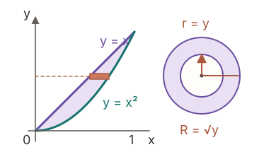
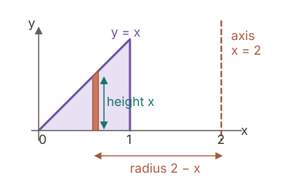
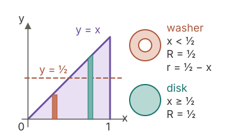
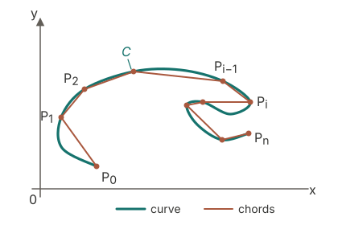
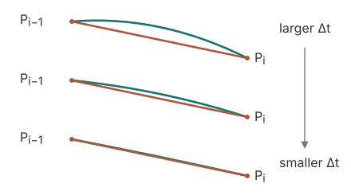
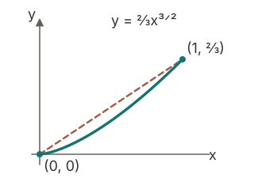
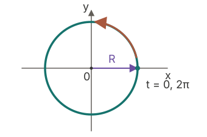
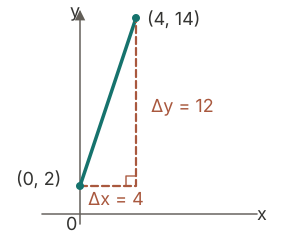

MA1508 Calculus · Chapter 6 · Lesson 3
Method choice and arc length
Describe the same solid two ways, then build curve length from chords.
Stewart, Single Variable Calculus: Concepts and Contexts, 4th ed.: §6.2–6.3, pp. 438, 449; §6.4, p. 455.
1. Two slices, one solid
Return to \(x^2\le y\le x\), rotated about the y-axis. A horizontal strip makes a washer; a vertical strip makes a shell. Both describe the same volume.
Check the same volume with washers.
Show answerHide answer

- At fixed \(y\in[0,1]\), the region runs from \(x=y\) to \(x=\sqrt y\).
- Rotating a horizontal strip gives outer radius \(\sqrt y\) and inner radius \(y\).
- \(V=\pi\int_0^1(y-y^2)dy=\pi/6\), agreeing with the shells.
Choose the direction with simpler boundaries. With a shifted axis, measure each radius from that axis. Split where a boundary or radius changes; if the region crosses the axis, avoid counting overlapping shells twice.
Rotate the region under \(y=x\), above \(y=0\), for \(0\le x\le1\), about \(x=2\).
Show answerHide answer

- The axis lies to the right. A shell has radius \(2-x\) and height \(x\).
- \(V=2\pi\int_0^1(2-x)x dx=2\pi(1-1/3)=4\pi/3\).
Rotate the region \(0\le y\le x\le1\) about \(y=\tfrac12\). Set up the volume and find it.
Show answerHide answer

- For \(0\le x\le\tfrac12\), the strip is below the axis: \(R=\tfrac12\), \(r=\tfrac12-x\).
- For \(\tfrac12\le x\le1\), the strip crosses the axis. It sweeps a disk of radius \(\tfrac12\), since the lower edge stays farthest from the axis.
- \(V=\pi\int_0^{1/2}[\tfrac14-(\tfrac12-x)^2]dx+\pi\int_{1/2}^1\tfrac14\,dx=\pi(\tfrac1{12}+\tfrac18)=\tfrac{5\pi}{24}\).
2. From chords to arc length

Let \(x(t),y(t)\) have continuous derivatives, with \(\alpha=t_0<\cdots<t_n=\beta\).
Here \(\Delta t_i=t_i-t_{i-1}\).

For \(\Delta t_i=t_i-t_{i-1}\) and coordinate changes \(\Delta x_i,\Delta y_i\),
\(\ell_i\) is the chord length; \(\Delta s_i\) is the curved arc length. Here \(\ell_i\le\Delta s_i\). For a short interval, the chord approximates the arc.
Refine an inscribed polygon on \(y=\tfrac23x^{3/2}\), \(0\le x\le1\). The magnified chord is one piece of the polygon. Its horizontal and vertical changes make a right triangle.
The limiting sum is the integral of speed:
For a graph \(y=f(x)\), set \(x=t\), \(y=f(t)\). The chord length is
For \(f\) with continuous derivative, the Mean Value Theorem gives \(\Delta y_i/\Delta x_i=f'(\xi_i)\) for some \(\xi_i\) in the interval. As the largest \(\Delta x_i\) tends to zero, the chord sum becomes a Riemann sum:
The endpoint chord is a lower bound, not usually the curve length.
Find the arc length of \(y=\tfrac23x^{3/2}\) from \(x=0\) to \(x=1\).
Show answerHide answer

- \(f\prime(x)=\sqrt x\), so \(L=\int_0^1\sqrt{1+x}dx\).
- With \(u=1+x\), \(L=[\tfrac23(1+x)^{3/2}]_0^1=\tfrac23(2\sqrt2-1)\).
- The result is about 1.219, greater than the endpoint chord \(\sqrt{1+(2/3)^2}\approx1.202\).
Parametric example
For \(x(t)=R\cos t\), \(y(t)=R\sin t\), find the length over \(0\le t\le2\pi\), where \(R>0\).
Show answerHide answer

- The speed is \(\sqrt{R^2\sin^2t+R^2\cos^2t}=R\).
- \(L=\int_0^{2\pi}Rdt=2\pi R\). The parameter interval traces the circle once.
If a parametrization retraces a curve, this integral counts every traversal.
Find the length of \(y=3x+2\) for \(0\le x\le4\).
Show answerHide answer

- The derivative is 3, so the integrand is \(\sqrt{1+9}=\sqrt{10}\).
- \(L=4\sqrt{10}\), also the distance between \((0,2)\) and \((4,14)\).